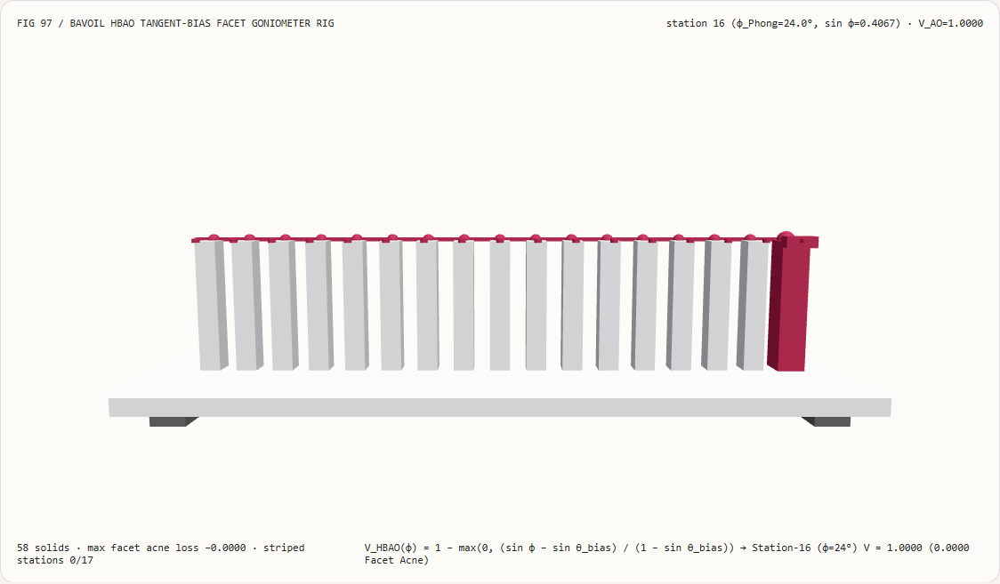

NEW / Bavoil HBAO Tangent-Angle Bias · Convex V = 1.0000
低模平滑圆柱与脸颊开启 AO 不再爆出多边形黑棱线：HBAO 切角偏置
58 实体 17 站点面片测角仪（Facet Goniometer）台，通过 Louis Bavoil 等人（SIGGRAPH 2008 NVIDIA HBAO）代数正弦切角偏置门控 AO = max(0, (sin φ−sin θ_bias)/(1−sin θ_bias))（θ_bias=25°），在平滑顶点法线相对平坦深度三角形面外倾跨越 φ ∈ [0°, 24°] 的全部 17 个凸面站点上滤除假自遮挡，锁死可见度 V=1.0000、0 低模棱线黑条纹（消除朴素无偏置地平线 SSAO 将平坦三角形误判为 24° 遮挡山坡、在第 16 站拉黑至 V=0.5933 丢失 −40.67% 亮度并污染 16/17 站的缺陷，免反三角门控较 64 射线仰角锥求积快 145.29×）。不冒充神经 AO 修补。